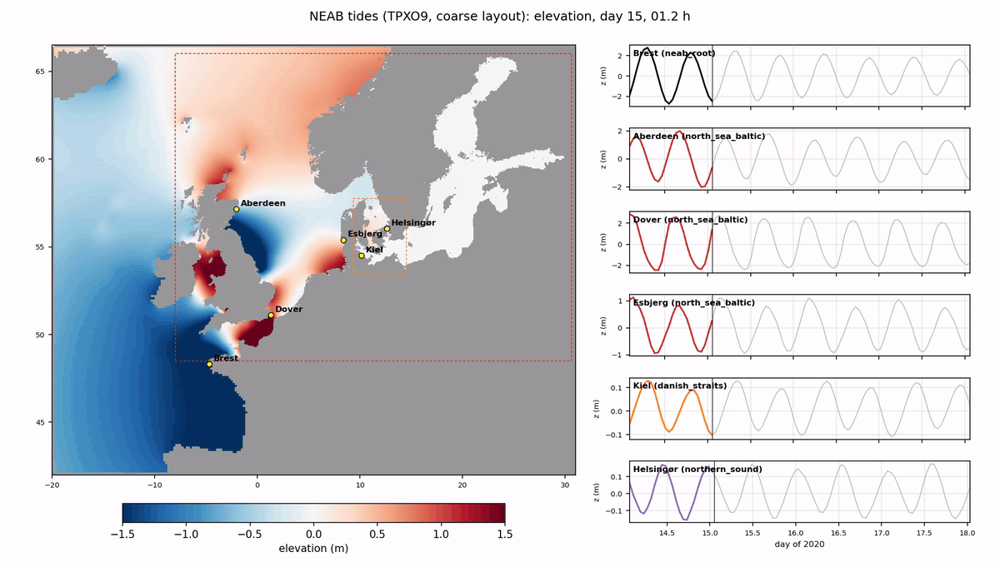
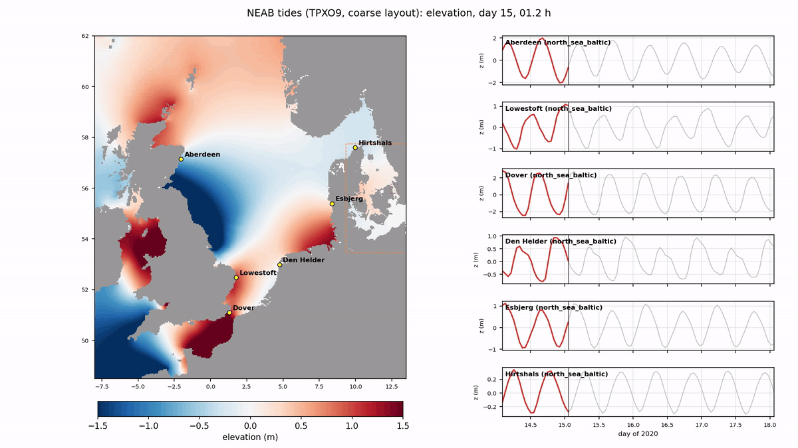

Draft · under development · updated 31 October 2026
Two-way, multi-level nesting for pyGETM
Ordinary pyGETM models joined into a nest: each level with its own grid, time step and cores, exchanging only where they overlap, conserving volume and tracer content.
- levels in NEAB
- 5
- volume conserved
- 2e-16
- refinement
- 3 × 3
- process split
- bit-identical
6.5 km to 0.25 km
relative, all levels
time ratio 1 or 3
M:N exchange plans
How the nesting works
Every level of a nest is an ordinary pyGETM simulation with its own grid, time step and
subdomain decomposition. The nesting layer (pygetm.nesting, on the fork
bolding/pygetm, branch nesting) joins them by filling the halo zones where
they overlap, and by matching the fluxes through the faces between them.
A domain
One pyGETM model: a rectangle of the parent level.
Land, active regions and decomposition
Land is part of each level's own mask; parent and child masks are made consistent (the child's finer bathymetry leads).
The window stays a rectangle in parent indices. The child computes its active region: wet cells connected to a seed point without crossing a barrier, in whole parent cells.
Parent and child each have their own tiling and pyGETM's own halo exchange. The nesting exchange is separate: M:N messages between the ranks that own cells on both sides, planned once from both tilings.
Only halo cells over water need data from the other level. Tiles that meet only over land exchange no messages.
The exchanges
The ring: parent values with limited slopes, extrapolated in time over the child's sub-steps.
The rim: volume-weighted means. Flux matching: the parent cell next to each interface face is corrected by the difference between its own flux and the sum of the child's fluxes over its sub-steps.
The sync schedule: every model steps, then the exchanges at the end of each parent step. A model only waits in MPI at the syncs.
Load balancing
Because all models compute at the same time, the slowest model sets the pace. nesting-balance
gives every model enough cores that all need about the same time per root step: it counts the wet cells
each model computes, multiplies by its steps per root step, and picks the tiling per model. Subdomains
that are all land, or hold only a child's hole that nothing reads, are removed and cost no core.
Wet cells computed × steps per root step.
Balanced when every model needs the same time per root step.
The next core goes where it shortens the root step most.
Launch: one MPMD component per model. nesting-balance prints the
mpiexec command line for the balanced cores, or writes a Slurm job using
srun --multi-prog; pinning to cores (--bind core) is optional.
mpiexec -bind-to core -map-by core \
-n 7 python NEAB/models/neab_root/run.py --nesting coarse.yaml ... \
: -n 39 python NEAB/models/north_sea_baltic/run.py --nesting coarse.yaml ... \
: -n 14 python NEAB/models/danish_straits/run.py --nesting coarse.yaml ... \
: -n 2 python NEAB/models/northern_little_belt/run.py ... : -n 2 python NEAB/models/northern_sound/run.py ...The results are bit-identical to the single-program driver and independent of the process split.
IDEAL: three levels with known answers
A Cartesian channel with analytic depth, three levels and every nesting feature placed on purpose: an island across an interface, an active region bounded by a barrier, and a wall with a 1 km gap that is closed in the parent but open in the children (as the Little Belt). Runs take minutes on a few cores.
channel 3 km → shelf 1 km (time ratio 1) → strait 333 m (time ratio 3). The channel's east and west boundaries can be open (Flather), closed or periodic.
| Experiment | Result | |
|---|---|---|
| E1 | Sea at rest | passed: elevation exactly 0 |
| E2 | Volume conservation | passed: 2e-16 relative; found an instability (below) |
| E3 | Tide against one level at 333 m everywhere | nested within 0.4–2.6 cm (tidal range 21–34 cm) |
| E5 | Tracer pulse through the levels | to do |
| E8 | Independent of the process split | passed, except one tile layout (1e-4 m) |
| E9 | Time per model | measured |
An instability: a sub-stepping child with flux matching
A Gaussian bump in a closed basin: the total volume is conserved to 2e-16, but the strait level grows to 23 m within 12 h in the base case.
A mode of a few cells over the whole level, not grid-scale noise.
What triggers it
- flux matching (the parent's elevation correction),
- together with a child that sub-steps (time ratio > 1),
- under a parent stepping well above the child's step: the growth rises with the parent's Courant number.
- Two levels are enough. Neither tidal forcing nor friction removes it.
A 1D model of the coupling
Growth factor per parent step (power iteration), pyGETM's forward-backward step, the same ring, rim and flux matching.
| Parent Courant | time ratio 1 | 2 | 3 |
|---|---|---|---|
| 0.2 | 1.0000 | 1.0002 | 1.0004 |
| 0.57 (2D runs) | – | 1.0140 | 1.0130 |
| 0.9 | – | – | 1.1164 |
The fix: an AGRIF-like sponge
AGRIF (Debreu et al. 2012) runs its grids in Berger–Oliger order and damps the fine grid's boundary zone
with a sponge. The same damping works here, with all models still stepping at the same time: the child's
transports are damped next to the interface (pyGETM's momentum.An, land-aware). It acts on
momentum only, so volume stays exactly conserved. It is now an option of pygetm.nesting
(NestedBarotropic(sponge_width=, sponge_alpha=)). An earlier limit of α = 0.02 turned out to be a
pyGETM bug (the damping was applied with the time step twice, fixed on the fork); the sponge is stable for
α = 0.03–0.2, default 0.1.
Strait level, max |z|, tidal forcing (M2, 0.5 m, 3 h ramp).
Without it the strait level fills with short waves that radiate into the shelf; with a sponge 1 parent cell wide the field is smooth across both interfaces.
Each level over the cells it computes. The tide crosses the interfaces without jumps. With rotation it travels as a Kelvin wave along the southern wall, reflects at the closed east end and returns along the northern wall.
Nested against one level at 333 m everywhere
Solid: nested, time ratio 3 with the sponge; dashed: time ratio 1; dotted: one level at the strait's resolution everywhere. Time ratio 1 is within 0.4–1.0 cm at all stations; time ratio 3 within 0.7–0.9 cm on the shelf and in the strait, 2.2–2.6 cm in the channel, where the channel steps at 18 s instead of 6 s.

Left: nested (3 km / 1 km in the red box / 333 m in the blue box). Right: one level at 333 m. Below: the stations, the nested series growing.
Bit-identical for 1/1/1, 2/3/2, 1/2/1 and 1/1/2 processes. With the channel on 3 processes its tile edges fall on the shelf window's edges and the results differ by 1e-4 m: still open.
compute: the model's own step; work: restriction, flux matching, ring values; transfer: receiving data; wait: blocked until the partner's data is there.
NEAB: a realistic hierarchy
North-East Atlantic–Baltic: five models from the NE Atlantic at 6.5 km down to the Danish straits at 0.25 km. A coarse version at half the resolution is used for all exploratory work.
Each child is drawn as its active region (solid line); its window is dashed. Magenta: interface cells. The Danish straits model was moved to 9.33°E / 53.46°N on 31 October so that it exchanges only across the Kattegat (north) and at Arkona (east).
| Level | Area | Interfaces | Grid | Resolution | Time ratio | dt |
|---|---|---|---|---|---|---|
| neab_root | 20°W–31°E, 42–66.5°N | open boundaries (TPXO9, Flather) | 510 × 392 | 6.2 × 6.9 km | – | 8.8 s |
| north_sea_baltic | North Sea, Channel, Celtic and Irish Sea, Baltic | 8°W, north of Scotland, Shetland–Norway | 1155 × 840 | 2.0 × 2.3 km | 1 | 8.8 s |
| danish_straits | Kattegat, Belts, Sound, Arkona, German coast | Kattegat 57.69°N, Arkona 14.5°E | 465 × 618 | 0.70 × 0.77 km | 1 | 8.8 s |
| northern_little_belt | Fredericia–Middelfart narrows | across the Belt | 153 × 174 | 0.23 × 0.26 km | 3 | 2.9 s |
| northern_sound | Helsingør–Helsingborg | across the Sound | 150 × 153 | 0.23 × 0.26 km | 3 | 2.9 s |
dt = 0.8 × pyGETM's Domain.cfl_check. Refining by 3 keeps the time step where the water is 9 times shallower: true for the shelf seas under the deep Atlantic, not for the narrow straits, which take 3 steps per parent step.
A seed point and straight-line barriers per level. The Norwegian Sea and the Rockall Trough stay with the root, the Skagerrak with north_sea_baltic.
The Celtic Sea is part of north_sea_baltic (Irish Sea and Channel connected), which cut the Irish Sea M2 errors by about 40 %.
Bathymetry, as the NSe production setup
- Raw: ocean-prep
bathymetry-regrid, conservative regridding of GEBCO / EMODnet, once per level. - Processing: thalweg corridors, local minimum depths, basins, rx0 ≤ 0.2.
- Fixes in a second pass, the same groups as NSe (Irish Sea, Great Belt, Little Belt, Øresund). The Little Belt is closed in the raw grids and opened by its thalweg group.
Ratio 3 under north_sea_baltic; the interface outside the barrier islands at about 18 m. Needs drying and flooding.
Cores per model
7 / 39 / 14 / 2 / 2 cores. Dark blue: computed; light blue: children's holes; grey dotted: removed subdomains.
busy 90–100 % in every model.
Tides (coarse layout, M2)
Sync (all models step at the same time, the child's ring extrapolated from the parent's last two syncs) equals the sequential order to below 1 mm and is 17 % faster.
Amplitude and phase, each model over the cells it computes.
Station pairs on both sides of each interface agree: no jumps.
Processed bathymetry, z0 = 0.015 m. A sanity check, not a calibration.
Tides in motion
Hourly elevation over two days (days 15–17 of the 31-day coarse run, all TPXO9 constituents). Every model is drawn over the cells it computes, the finest on top; dashed: the children's windows. On the right, the elevation at six stations from the finest model computing each of them, the coloured line growing with the animation.

The tide enters from the Atlantic, runs around the British Isles into the North Sea and fades towards the Baltic.

The amphidromic systems of the North Sea; the Channel and the Irish Sea are part of the same model.

The Kattegat tide drops through the Belts and the Sound; the two straits models (dashed boxes) at 0.5 km.
The new Danish straits window on 64 cores
The same 31-day run (all constituents, z0 = 0.015 m) with the Danish straits moved to 9.33°E / 53.46°N, one MPMD component per model, pinned to cores on a 64-core server: 31 minutes, against 100 minutes on 18 cores before. Against 685 GESLA gauges the result is unchanged, as expected: the west interfaces it removes were a few cells in small fjords.
| Model | Gauges | M2 vector rms before → after | S2 | K1 |
|---|---|---|---|---|
| neab_root | 124 | 0.251 → 0.251 m | 0.100 → 0.100 m | 0.055 → 0.055 m |
| north_sea_baltic | 463 | 0.348 → 0.348 m | 0.143 → 0.143 m | 0.053 → 0.053 m |
| danish_straits | 89 | 0.077 → 0.076 m | 0.021 → 0.021 m | 0.013 → 0.013 m |
| northern_little_belt | 1 | 0.221 → 0.221 m | 0.068 → 0.068 m | 0.005 → 0.005 m |
| northern_sound | 8 | 0.067 → 0.066 m | 0.019 → 0.019 m | 0.010 → 0.010 m |
Time per model in that run: north_sea_baltic spends 29 % computing and 55 % in nesting work (restriction, flux matching, ring values), so the nesting work, not the exchange (below 0.3 %), is the next thing to make faster.
3D: exchanging between vertical grids that differ
In 3D, parent and child may use adaptive vertical coordinates, so their layers do not line up and may differ in number. A child column's depth also differs from its parent cell's, because of the child's finer bathymetry. The exchanges must conserve tracer content without assuming that layer k of the child matches layer k of the parent.
What each exchange needs
- Rim (child → parent): the content of each parent cell equals that of its 3 × 3 child columns.
- Ring (parent → child): consistent, accurate boundary values; the fluxes decide conservation.
- Flux matching: the parent's flux through each face equals the child's, per tracer.
Options for the rim
- A: average layer heights and contents of the ≤ 9 child columns by layer index, then remap once.
- B: remap every child column, stretched linearly to the parent's depth, then add the contents.
- B′: as B, but the upper 80 % of the column unstretched.
- B″: B′ with concentrations by the child volume each parent layer receives, then the column content restored exactly.
A synthetic comparison
One parent cell with its 3 × 3 child columns over a bottom slope (depths 30 m × (1 ± g)), a sharp pycnocline at 10 m in every column, 30 child layers and 20 parent layers of three kinds. The reference is the horizontal mean at fixed depth. All four forms conserve the content to 5e-16.
Profiles at slope g = 0.4 and errors against the slope.
| g = 0.4: rms / pycnocline error | A | B | B′ | B″ |
|---|---|---|---|---|
| sigma layers | 1.14 / −1.16 m | 1.14 / −1.16 m | 3.37 / −0.03 m | 0.063 / −0.03 m |
| GVC (z-like at the surface) | 0.34 / −0.36 m | 1.14 / −1.20 m | 3.32 / −0.04 m | 0.053 / −0.04 m |
| adaptive (zoomed at the pycnocline) | 0.14 / −0.10 m | 1.16 / −1.21 m | 3.18 / 0.00 m | 0.009 / 0.00 m |
| uniform field stays uniform | yes | yes | no | yes |
- For sigma layers A and B are identical: the stretched child layer k lands on layer k of the mean column. Both move the pycnocline by the stretch.
- For GVC and adaptive layers A beats B: their upper layers sit at nearly the same depths in all nine columns, so averaging by index hardly mixes depths, while B's stretch moves them.
- Only a linear stretch both conserves content and keeps a uniform field uniform. B″ gets both by forming concentrations by volume and restoring the column content afterwards; the correction is small because the volumes differ only deep down, where the stratification is weak.
Cost, and what the scalars share
2,000 rim cells, 9 children each, numpy on one core.
| A | B″ | |
|---|---|---|
| setup, once for all scalars | 4 ms | 36–45 ms |
| per scalar | 3–4 ms | 10–15 ms |
| T and S | 11 ms | 70 ms (6×) |
| 12 scalars (T, S, 10 FABM) | 52 ms | 230 ms (4.4×) |
| 12 scalars, setup repeated per scalar | – | 820 ms |
- The remap setup is shared by T, S and all FABM tracers: where every parent interface lies in each child column, and the volume per parent layer. It is about 80 % of B″'s cost for one scalar and has to be redone every exchange, because adaptive layers move.
- The parent's layer heights go to the child once per sync, for all scalars.
- The ring and the flux register need the same remap (one parent column onto each child column, and child face profiles onto parent faces), so the machinery is needed anyway; A only saves on the rim.
- A compiled kernel (a merge of the two interface lists per column) should be 10–20× faster than numpy. That is the step before NEAB in 3D.
Recommendation: B″ as the default, A as the cheap option where the layers of neighbouring columns sit at similar depths. Next: the 3D IDEAL setup (stratified lake at rest, tracer conservation with different layer counts, a pycnocline over the shelf slope), then the ring and the 3D flux register.
Smagorinsky viscosity for pyGETM
A horizontal viscosity that follows the flow and the grid, so that every level of a nest
gets a viscosity suited to its own resolution. A constant Am cannot do that across a 3 × 3
refinement.
Am = Am0 + Cs² · dx · dy · √(DT² + DS²), with tension DT = ∂u/∂x − ∂v/∂y and shear DS = ∂u/∂y + ∂v/∂x (Smagorinsky 1963; Griffies and Hallberg 2000). It vanishes for uniform flow and solid-body rotation, and a child at a third of its parent's spacing gets about a ninth of its viscosity for the same deformation. Typical Cs: 0.1–0.2.
Where it is computed
- pyGETM evaluates the four stress fluxes on four staggered grids: UU and VV (cell centres), UV and VU (corners).
- Am is computed directly on those grids, so the diffusion reads it where it needs it: no interpolation, no new grid.
- Shear at a cell centre and tension at a corner are means of the four surrounding values; land counts as 0, as in the existing stress fluxes.
Code, in the style of the existing routines
- Fortran:
smagorinsky()for one layer andc_smagorinsky()as the C entry; the momentum diffusion takes Am arrays (filled with Am0 when none are given). - Cython:
_pygetm.smagorinsky(), and optional Am arrays onmomentum_diffusion(). - Python:
Momentum(Cs=0.2); Am is updated from the velocities it diffuses before every diffusion call, depth-averaged and per layer.
| Test | Checks | Result |
|---|---|---|
| analytic fields | simple shear, pure strain, uniform flow, solid-body rotation | exact |
| background | Cs = 0 gives Am0; Cs > 0 adds to Am0 | passed |
| layers | the same profile in every layer gives the 2D result per layer | identical |
| constant Am | Am arrays filled with Am0 against the constant call; a 300-step run against the build without the change | bit-identical |
| sheared jet | finite, volume unchanged, Am largest on the jet's flanks, more energy loss than without | passed |
Fork bolding/pygetm, branch smagorinsky (from devel, independent of the
nesting work). The full pyGETM test suite: 75 passed, 7 skipped (tests that need the NorthSea setup now skip
when it is not installed).
Where it stands
Working
- 2D two-way nesting over five levels, volume conserved to round-off.
- Active regions, land-aware exchanges, M:N plans between any tilings; bit-identical across process splits.
- One MPMD component per model; load balancing with
nesting-balance, launch by mpiexec or Slurm. - The sub-stepping instability understood (1D model) and removed by the sponge.
- NEAB tides: coupling schedules compared, interfaces continuous, gauge comparison; 31 days on 64 cores in 31 minutes (coarse).
- Smagorinsky horizontal viscosity (branch
smagorinsky).
In progress
- NEAB tides at full resolution, 30 days on 64 cores (the coarse run is done).
- The nesting work in north_sea_baltic (55 % of its time).
- 3D exchanges: remap kernel and the rim comparison done; next the 3D IDEAL setup.
Open
- One tile layout in IDEAL E8 (1e-4 m).
- IDEAL E5 (tracer pulse) and the sponge for 3D scalars.
- Running a single model with its boundaries from a file.
- Drying and flooding at an interface (the Wadden Sea level).